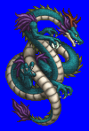
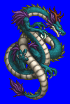
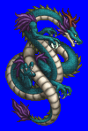
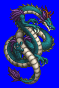

Height: ??? Weight: ???
Habitat: Sea Origin: China
Meaning: Chinese for "blue dragon"
Seiryu is the dragon god of the east in ancient Chinese mythology. The body of this large blue dragon is enshrouded in fog and stormclouds. It is drawn with a long, serpentine body, green or blue scales, and sometimes with a touch of white or yellow on the head. The blue-green color of the scales symbolizes the vitality of the land and the renewal that the spring rain brings. Additionally, it is a symbol of authority and wealth worn by the upper class.
See also: White Tiger, Black Turtle, Red Sparrow, Ki-Rin